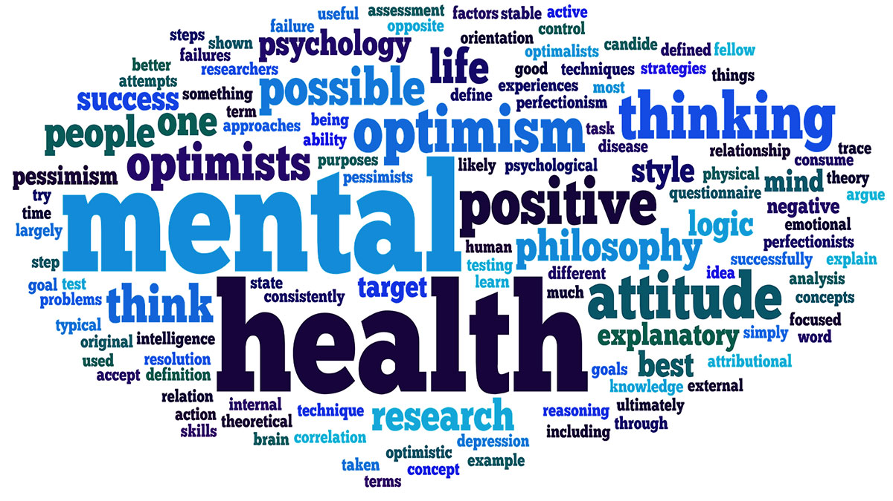

University students' mental health is an important and expanding health concern. Recent studies have shown that there is an increase in the number of students receiving mental health diagnoses. According to National Alliance on Mental Illness (NAMI) research, one in four students in the US has a mental health condition. University counselors in the UK have noted an upsurge in the number of students battling mental health-related concerns. According to an NUS poll from 2014, 75% of the students had mental health problems (Winrow, 2017). Additionally, the number of university students quitting their studies due to overwhelming mental health difficulties has increased. Students in higher education are impacted by a variety of mental health conditions. One of the most common mental health problems among students is depression. 77% of students with mental health issues reported having depression, according to a YouGov study (Aronin and Smith, 2016). Another mental health problem affecting university students is anxiety. Anxiety is mostly brought on by a variety of problems, including exam anxiety and trouble studying. University coursework can be very hard and, for certain students, very energy intensive. To pass a certain class, students must also get a specific score. As a result, some students can have performance anxiety, which could impair their mental health. Another significant concern with mental health is stress among university students. There are many different types of student stress, all of which have the potential to harm mental health. ¬-They consist of: living independently for the first time; managing an increased workload and additional w¬¬ork responsibilities; culture shock; language barriers; homesickness; increased study costs; and an increasingly.

The prevalence of mental illness is rising in the twenty-first century. Not everyone gets the assistance they require. Even though mental illness is now widespread and may impact anyone, it still has a stigma. Due to this stigma, people are still hesitant to embrace mental illness. They are ashamed to admit it and ask the doctors for assistance. It's crucial to keep in mind that the terms "mental health" and "mental illness" are not synonymous. Stereotyping of mental illness has a long history everywhere. It was once considered to be the devil's mark, but today it is typically seen as a moral penalty. Additionally contributing to the stigma is how mental illness is portrayed in the media. Social stigma, or the prejudiced attitudes of others toward mental illness, and self-perceived stigma, or an internalized stigma that the individual with the mental illness experiences, are the two main categories of the stigma associated with mental disease. Both exist quite a bit. The stigma shouldn't exist indefinitely in a society that upholds moral standards. People could change things. A person who is emotionally healthy and stable always feels lively and fully alive and can handle emotionally challenging events with ease. One needs to be physically fit as well as emotionally strong. Even though mental health is a very individual matter—what affects one person may or may not affect another—there are several crucial factors that contribute to mental health problems. Our level of fitness is greatly influenced by a variety of emotional elements, such as fear, anger, negative thinking, despair, and violence. Regular exercise helps maintain a high level of physical fitness since physically fit people are generally upbeat and can handle stress and depression with ease.
In conclusion, it is clear from the debate above that university students' mental health concerns are a serious issue that should be treated more seriously given the expanding number of affected students. Student difficulties, including learning to live alone for the first time, juggling an increased workload, more employment duties, and skyrocketing tuition costs, are some of the factors that contribute to mental health problems. Different mental health conditions, such as depression, stress, anxiety, and eating disorders, may affect students. To tackle the rising number of cases of students having mental health concerns, universities must step up their efforts to provide the appropriate support services